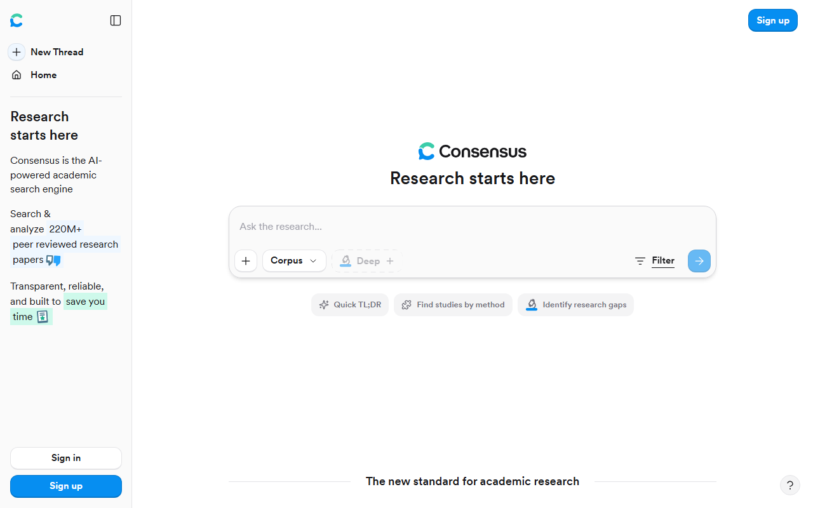

Consensus AIの料金プラン｜無料でできることと有料版との違い、日本からの支払い
Consensus AIは、研究テーマに関連する論文を探し、その内容を把握するためのAI論文検索サービスです。無料で始められますが、分析機能には月ごとの上限があります。
無料のままで足りるケースと、Pro・Deepへの切り替えが必要になるケースを、料金や支払い条件とあわせて紹介します。
Consensus AIの料金プランはFree・Pro・Deepなど5区分
論文検索を始めるだけならFreeが入口です。分析機能を継続して使うならPro、Deep Reviewを多く使うならDeepを検討します。
- Free：$0／Papers検索は無制限
- Pro：$20/月／分析機能を継続利用
- Deep：$65/月／Deep Reviewを多用
- Teams：席数に応じた料金
- Enterprise：個別見積もり
Free・Pro・Deep・Teams・Enterpriseの違い
個人が無料で始められるのはFreeです。ProではProメッセージが無制限になり、Deep Reviewは月15回まで使えます。
DeepはDeep Reviewが月200回まで増えるプランです。Teamsは利用する席数で料金が変わり、Enterpriseは個別見積もりとなります。
迷ったらFreeから始める
Papers検索はFreeでも無制限です。まず検索を試し、月間上限のある機能の利用状況を見てから有料化を判断できます。

料金ページでは、現行プランと年払いを選んだ場合の料金を見られます。
Consensus AIの料金を月払い・年払いで確認
Freeは$0です。ProとDeepには月払いと年払いがあり、年払いを選ぶと1か月あたりの金額が下がります。
Freeは$0
Freeの料金は$0です。Papers検索には回数制限がありません。一方、Deep ReviewやStudy Snapshotなどは月間上限の範囲で使います。
Proは月払いと年払いから選ぶ
- 月払い：$20/月
- 年払い：$144/年
- 年払いの月額換算：$12/月相当
長く使う前提なら、Proは年払いのほうが月額換算を抑えられます。利用頻度がまだ読めない場合は、Freeの上限を試してから判断する方法もあります。
DeepはDeep Reviewを多く使う人向け
- 月払い：$65/月
- 年払い：$540/年
- 年払いの月額換算：$45/月相当
Deep Reviewは月200回まで使えます。複数のテーマを継続して調べており、Proの月15回では足りない人向けの料金設定です。
TeamsとEnterpriseは導入規模に応じて確認する
Teamsの料金は席数別です。Enterpriseは個別見積もりなので、公開価格だけでは総額を出せません。
研究室や組織で導入する場合は、必要な席数を決めてから問い合わせる流れです。個人で使うなら、まずFree・Pro・Deepの3区分から考えれば十分です。
料金ページでは、ProとDeepの月払い・年払いを切り替えて比べられます。
Freeで使える機能と月ごとの上限
FreeでもPapers検索は無制限です。ただし、論文を深く調べる機能や外部連携には月ごとの上限があります。
Papers検索は無制限
関連論文を探すPapers検索は、Freeでも回数を気にせず使えます。調べたいテーマの候補論文を集めるところから始めるなら、有料プランは必須ではありません。
Deep Reviewは月3回
複数の論文をもとに詳しい調査結果をまとめるDeep Reviewは、Freeでは月3回です。まず数件のテーマで、どのような結果が得られるかを確かめられます。
Study Snapshotは月10回
研究の概要を短く把握するStudy Snapshotは、月10回までです。候補論文が多いときは、優先して読む論文を絞ってから使うと、月10回の枠を配分しやすくなります。
API・MCPは月30回
API・MCPの無料枠は月30回です。Consensusを外部の仕組みと連携して使う場合は、Papers検索とは別枠で回数が消費されます。
Proメッセージは月10回
FreeのProメッセージは月10回までです。Papers検索は無制限ですが、Proメッセージには月ごとの上限があります。
Pro・Deepへ切り替える目安と割引
ProメッセージやDeep Reviewの上限に何度も達するならPro、Deep Reviewを集中的に使うならDeepが候補です。
Proは分析機能を定期的に使う人向け
Proへ切り替える目安は、次の3つです。
- Proメッセージの上限に達する
- Deep Reviewの無料枠を使い切る
- 単発ではなく、毎月論文を調べる
検索はFreeで足りるものの、分析機能の回数が不足する人に合います。
DeepはDeep Reviewを多く使う人向け
Deepを考える目安は、ProのDeep Review枠を毎月使い切ることです。複数の研究テーマを並行して調べる人は、Proで実際の使用回数を見てから切り替えると、判断しやすくなります。
学生・教員向け割引の対象と申請方法
学生・教員向けには40%割引があります。料金ページの申請画面で、.eduまたは.acのメールアドレスによる認証が必要です。
該当するメールアドレスがない学生は、在籍証明をstudent@consensus.appへ送る案内があります。
日本の.ac.jpメールアドレスが対象になるかは、公式案内に記載がありません。
臨床医向け割引は日本からの対象条件に注意する
臨床医向けの割引率は25%です。対象には米国の有効なNPI番号が求められるため、日本の医療職は同じ条件では申請できません。
まずFreeを使えば、どの月間上限が自分の調査で減りやすいかを見てからプランを選べます。
日本からの支払い・請求書・税の確認点
支払い通貨はUSDです。カード情報と請求先住所はSettingsから登録・変更できます。一方、日本のカードや一般プランの請求書については、公式の案内がありません。
日本語については、画面表示を日本語へ切り替える機能を確認できません。AIが作る要約やKey Takeawaysは、日本語を出力言語に選べます。問い合わせ窓口とヘルプセンターは英語で、日本語サポートの案内はありません。
支払いはUSDのカード決済
カード情報を管理するには、SettingsからSubscription、Manage、Manage payment methodの順に進みます。請求先住所もカード情報とともに更新します。
日本円ではなくUSDで請求されます。
日本発行カードとJCBは公式記載なし
対応するカードブランドは、公式情報から確認できません。日本で発行されたカードやJCBが使えるかどうかも、公式情報では確認できない状態です。
一般プランの請求書ダウンロードは未確認
返金申請ではinvoiceまたはreceipt番号を使います。また、API・MCPのダッシュボードでは請求履歴を表示できます。
一方、個人向けの一般プランで請求書をダウンロードできるかは確認できません。
税の扱いは契約主体に応じて確認する
消費税やリバースチャージ、適格請求書として扱えるかは、契約する個人・法人の状況で判断が変わります。経費処理が必要な場合は税理士に確認してください。
ConsensusとElicitの無料枠・料金の違い
どちらも無料で論文検索を始められます。Consensusは機能ごとの月間上限、Elicitは検索・要約・回答ソース表示を含むBasicの内容に注目すると、両者の違いが分かります。
ConsensusはPapers検索から始めたい人向け
- 無料入口：Free $0
- 検索：Papers検索は無制限
- 有料入口：Pro $20/月または$144/年
検索回数を気にせず候補論文を探し、必要なときだけDeep ReviewやStudy Snapshotを使いたい人に向きます。
Freeを選ぶと、料金をかけずにPapers検索から始められます。
Elicitは論文検索・要約・回答ソースをまとめて試したい人向け

- 無料入口：Basic
- 無料機能：論文検索、要約、回答ソース表示
- 有料入口：Pro $49/ユーザー/月（年払い）
ElicitのBasicには、全文へアクセスできる論文とのチャットやZotero取り込みも含まれます。Research AgentとResearch Reportsには利用量の制限があります。
Proは年払い時が$49/ユーザー/月で、年額は$588です。月払いは$75/ユーザー/月となります。
Scaleは年払い時が$169/ユーザー/月で、年額は$2,028です。月払いは$279/ユーザー/月となります。
有料プランは必要な調査工程で選ぶ
ConsensusはDeep Reviewの回数を増やしたいとき、ProまたはDeepを検討します。ElicitはResearch AgentやResearch Reportsを含む作業量に応じて、有料プランを選びます。
無料プランで比べると、ConsensusはPapers検索の回数を気にしなくてよい点が明確です。Elicitは検索後の要約や回答ソース表示までBasicに含まれます。
解約・一時停止・Freeへの移行と返金条件
Settingsから解約または一時停止を選べます。
Settingsから解約する手順
- Settingsを開く
- Subscriptionを選ぶ
- Manageを開く
- Cancel subscriptionを選ぶ
有料期間の途中で手続きしても、次の請求を止める予約として扱われます。
一時停止して再開する方法
同じ管理画面では、解約のほかに一時停止も選べます。再開するときはResumeを選びます。
しばらく使わないものの、再開する可能性がある場合は、解約と一時停止の違いを比べて選べます。
有料機能を使える期限
解約後も、現在の請求期間が終わるまでは有料機能を使えます。期間が終わるとFreeへ移行します。
年払いを選ぶ場合は、次回更新日も見ておくと残りの利用期間が分かります。
返金申請の期限
返金を申請できる期間は、月払いが購入後72時間、年払いが購入後5日以内です。期限内に申請しても、返金が保証されるわけではありません。
返金が認められた場合は、元の支払い方法へ返されます。申請時にはinvoiceまたはreceipt番号を使います。
契約前に料金ページを開けば、月払いと年払いをもう一度比べられます。
Consensus AIの料金でよくある質問
ここでは、料金と無料枠を比べたあとに残りやすい疑問へ答えます。
ProとDeepはどちらを選ぶ？
まずProを選び、Deep Reviewの枠を毎月使い切る場合にDeepを検討します。Proメッセージを無制限に使いたいだけなら、Proで足ります。
まとめ：無料枠の上限を見てから有料プランを選ぶ
Papers検索から始めるなら、まずFreeで足ります。分析機能の上限に達して調査が止まるようになったらPro、その枠も毎月使い切るならDeepを検討します。
Freeで続けやすい人
候補論文の検索が中心で、分析機能は必要なときだけ使う人です。無料枠の上限内なら追加料金はかかりません。
Proを検討する人
Proメッセージを無制限に使いたい人です。年払いは$144で、月払いより月額換算を抑えられます。
Deepを検討する人
ProのDeep Review枠を毎月使い切る人です。料金はProより上がるため、実際の使用回数を基準に選びます。
契約前の確認リスト
- Freeで検索回数と分析機能の減り方を見る
- ProとDeepのDeep Review回数を比べる
- 月払いと年払いの総額を比べる
- 日本語UI、支払いカード、請求書の公式記載を確認する
- 解約日と返金申請の期限を把握する
公式料金ページでは、選んだプランの支払い周期と現在の価格を確認できます。